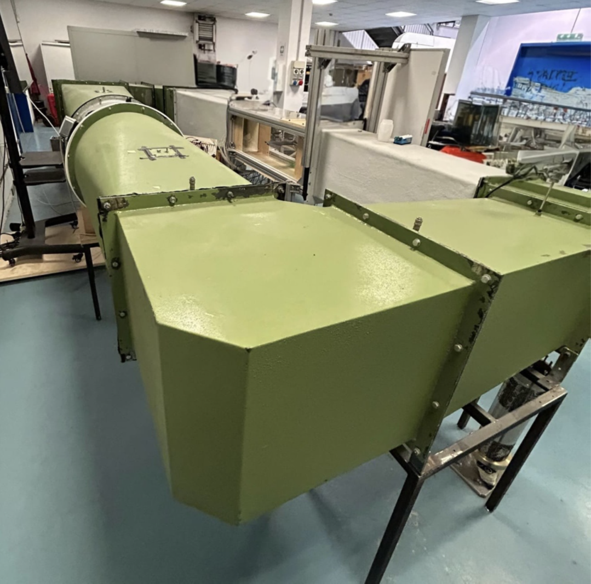
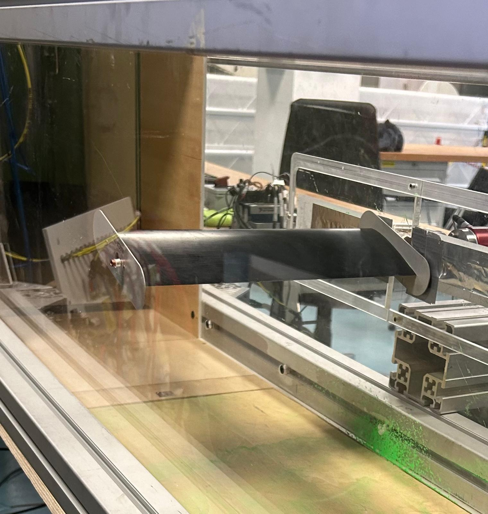
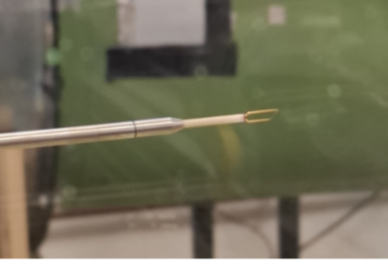
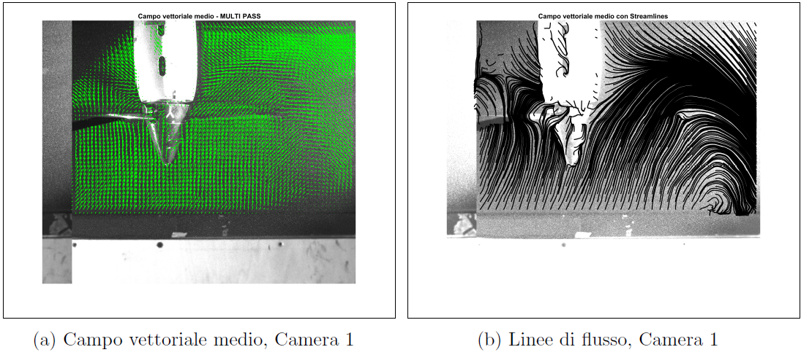

Wind Tunnel · Force Balance · PIV · Hot-Wire · Politecnico di Milano · A.A. 2024–2025
Three wind tunnel laboratory sessions: aerodynamic force measurements on a NACA 0015, surface pressure and wake analysis on a NACA 23012, and PIV investigation of vortex dynamics in a side-by-side eVTOL rotor configuration.
Overview
The Experimental Fluid Dynamics course at Politecnico di Milano builds measurement skills progressively: from integrated force acquisition, to surface-resolved pressure fields and wake traverses, to full-field optical velocimetry. Each session required instrument calibration, data acquisition, MATLAB post-processing, and comparison against XFOIL predictions.
The same closed-circuit wind tunnel at the Department of Aerospace Sciences was used throughout, with different instrumentation setups for each objective. The three sessions form a coherent journey from global aerodynamic coefficients to spatially-resolved flow structures.
PoliMi closed-circuit low-speed wind tunnel — test section
Lab 01
Aerodynamic Forces — NACA 0015
6-axis Futek force balance, calibration matrix, CL / CD / CM curves vs angle of attack, stall identification, drag polar, XFOIL validation.
Lab 02
Pressure & Wake — NACA 23012
16 surface pressure taps, Cp distribution, three CL integration methods, hot-wire wake traverse, drag from momentum deficit, spectral analysis of velocity fluctuations.
Lab 03
PIV — eVTOL Rotor Interaction
Particle Image Velocimetry on a side-by-side dual-rotor eVTOL configuration. Full-field velocity maps, tip vortex dynamics, rotor-to-rotor wake interaction.

NACA 0015 mounted in the test section — Futek 6-axis force balance
Lab 01
The first session used a 6-axis Futek force balance to measure the aerodynamic forces and moments acting on a symmetric NACA 0015 airfoil. Before any acquisition, a 3×3 calibration matrix was derived by applying known loads along independent directions and performing a least-squares regression — verifying that cross-talk between axes was negligible.
Measurements were taken at 11 angles of attack from −4° to +16°, with three independent acquisitions averaged at each condition. Force components in the body frame were rotated into the wind frame to recover lift and drag, then non-dimensionalised into CL, CD, and CM curves. Results aligned well with XFOIL in the attached flow regime, with clear stall onset visible in all coefficients above 10°.
Lab 02
The second session shifted to a NACA 23012 instrumented with 16 pressure taps — 8 on the suction side, 8 on the pressure side. Cp distributions were measured at several angles of attack and compared to XFOIL predictions, showing good general agreement. Three different methods were used to integrate the Cp field into a lift coefficient, and their accuracy was benchmarked against each other.
The second part introduced a hot-wire anemometer traversed vertically across the wake at fixed incidence. The velocity deficit profile was used to compute drag via momentum conservation, complementing the pressure-based lift measurement with a viscous drag estimate. A spectral analysis of the velocity fluctuations at three wake heights revealed how turbulent energy decays moving away from the wake centreline.

Hot-wire anemometer probe — wake traverse downstream of NACA 23012

PIV velocity field — side-by-side eVTOL rotor configuration, near-wake region
Lab 03
The third session used Particle Image Velocimetry to map the flow field generated by a side-by-side dual-rotor configuration representative of eVTOL propulsion systems. PIV is a non-intrusive optical technique: the flow is seeded with tracer particles, illuminated by a laser sheet, and captured with a double-frame camera. Cross-correlating the two frames yields a full 2D velocity field — something no point measurement can provide.
The interest of the side-by-side configuration lies in the aerodynamic coupling between the two rotor wakes. Tip vortices shed by adjacent rotors interact in the near wake, producing vortex pairing and merging phenomena that affect both thrust and noise. The PIV measurements allowed direct observation of these interaction regions — a dataset directly relevant to the aerodynamic and acoustic design of next-generation urban air mobility vehicles.